Subscriptions plugin
Subscriptions plugin
Subscriptions plugin is written for those businesses which sell subscriptions, e.g. magazines, newspapers, membership fees, gymnasiums, etc. This Subscriptions plugin could also be used for rental industries, renting items to their customers on for example a monthly basis.
With this plugin you'll never forget to charge your members for a subscription.
You can define for each member:
- Which product or service they bought.
- The repeating frequency (x times per day, week, month, etc.)
- A warning period in which you get automatically reminded to send the customer a notice for continuing using your services (i.e. 31 days before the invoicing date).
So you'll always get reminded to remind your customer to renew his/her subscriptions. - The quantity of days before or after the renewal date, allows you to create the invoice(s) by a click on a button.
- A different contract period (i.e. 1 year) with the invoicing period (i.e. per month).
You also can:
- See when the next renewal date will be.
- See when the last invoiced date was.
- Send an automated invoice by email.
- search through the subscriptions for a specific product/service and see who has a subscription to it.
The number of days before or after the renewal date osFinancials / TurboCASH let you create the invoice with the click on a button. A different contract period (i.e. 1 year) with the invoicing period (i.e. per month).
You also can: See when the next renewal date will be. See when the last invoiced date was. Send an automated invoice by email.
Search through the subscriptions for a specific product/service and see who has a subscription to it.
Activate subscriptions
Follow the instructions to activate your plugin.
On the Setup ribbon, click on Document plugins → Plugins → Subscriptions. If this plugin is not listed under Plugins → Document plugins, activate it via Tools → Activate plugins.
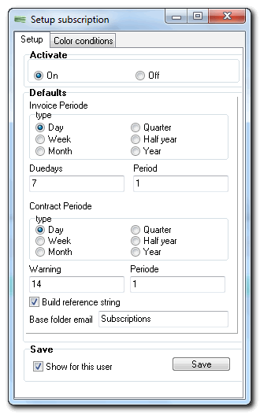
The options is as follows:
- Activate - turn the plugin on or off.
- Defaults - You may set the default global settings for all subscriptions. You may adjust it when creating a new subscription.
- The upper part is about the contract period, the lower part is about the billing period. So you can eg specify that the contract period is 1 year, which you filled in the days when "Duedays" for (a positive number) or after (a negative number) the contract date will receive a billing notice.
- There beside specify e.g. the billing period is 1 time per month, and that you know the number of days filled with "Warning" for (a positive number) or after (a negative number) the billing date, a warning message will be displayed. You may also use other periods.
- Uncheck "Build reference string" ensures that you record, which is used as reference for the bill to make. A "reference" to the created subscriptions You fill in the subscription end the "Reference" field. If you have multiple subscriptions on the same invoice, fill in only one.
- Base folder - Subscriptions is the folder for the e-mail templates, layout files, etc.
Click on the Save button. This will add a Subscriptions icon to the Default ribbon to allow easy access to the Subscriptions plugin.
Setup subscriptions
Once Subscriptions have been activated, the Subscriptions screen will be displayed when you open the Set of Books, if any subscriptions need processing.
To add the subscriptions, you need to do the following:
- Create Stock items for Subscriptions (if these do not already exist).
- Add subscriptions to Debtors (customer) accounts.
Once this is done, you may proceed to process descriptions.
Add subscriptions to debtors (customers)
To add Subscriptions for debtors (customers):
- On the Default ribbon, select Debtor.
- Select a specific Debtor (customer) account on the list.
- Click on the Edit button. (Alternatively, you may double-click on the selected debtor (customer / client) account).
- Click on the Subscriptions tab.
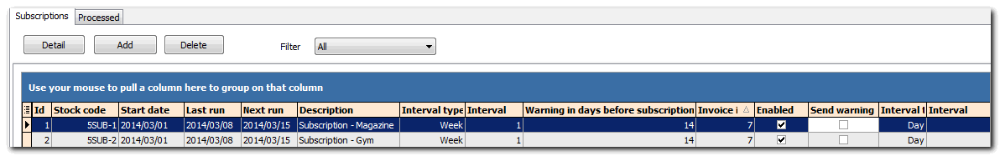
- The default term as set when activating the Subscriptions plugin will be displayed. You may change this for each subscription. Click on the Add button.
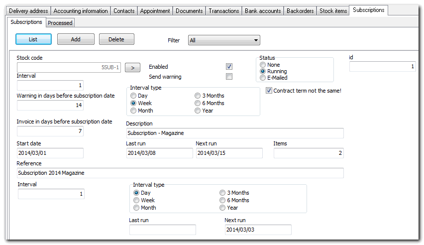
- Select and or enter the following options:
- Stock code - Click on the lookup > button and select the stock item.
- Enabled – This will activate or deactivate the Subscription of this product for this debtor. If the tick is removed from this field, no further subscriptions will be processed.
- Send warning - Uncheck "Warning send" ensures that you check .....
- Status – This will indicate the status of the plugin (i.e. None, running or E-mailed).
- id – The id is the subscription record id. It will automatically be generated when the added subscription is saved.
- Contract term not the same – This field allows you to set the 2nd set of settings for a period contracts. If selected (ticked), it will add the Interval and Interval type options (fields) at the bottom (underneath the Reference field) of the Subscriptions tab.
- Interval - The "interval" field determines how often subscriptions should be processed. During the chosen period invoiced The "Warning in days for subscription"
- Warning in days before subscription date – Enter the number of days before or after the "next process" in which the first warning message is shown in the popup plugins.
- Invoice in days before subscription date – Enter the number of days before or after the "next process" in which the billing message is shown in the popup plugins.
- Interval type – Select the frequency when the subscription is due (i.e. Day, Week, Month, 3 Months, 6 Months or Year).
- Description – The description of the selected stock item will be displayed. You may add to the existing stock description or overtype the description, if necessary. This will be displayed in the invoices / quotes.
- Start date - The default date is today, but can be adjusted if desired. This is the date from which the subscription or contract starts. The Last run and Next run fields will automatically be updated. This is the date from the start date plus the number of days entered in the Invoice in days before subscription date field. If the subscription has already been billed, you will see the last billing date in the Next run field. With the "number" field
- Items – The number of stock items for the debtor that is included and processed for this subscription. You may enter the number (quantity) subscription products.
- Reference – Enter the reference text which is used on the invoice / quote. In this field, we can also use data fields. This reference will be displayed on the “Your reference” field on invoices / quotes.
- Click on the List button to save the subscription.
- Click on the Save button on the Edit Debtor screen to save your changes.
- Select the next debtor (customer / client) account, if necessary.
Delete subscriptions
To permanently remove an existing subscription, you may click on the Delete button.
It is important to ensure that you can set a subscription to disabled by removing the tick in the Enabled field.
If the subscription needs to be activated at a later point in time be enabled again, you may tick the Enabled field.
View processed transactions
Once subscriptions have been processed, an extra Processed tab will be added. If you click on the Processed tab, the quotes and invoices will be listed.
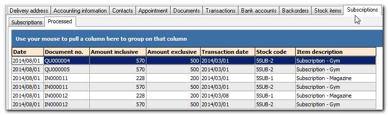
You may double-click on a quote or an invoice to print the document.
Process subscriptions
The Subscriptions plugin will automatically be launched if you open the Set of Books and any subscriptions need processing.
To manage subscriptions:
If the Subscriptions plugin is not automatically launched, click on the Subscriptions icon on the Default ribbon. The Subscriptions (Warnings) plugin screen is displayed:
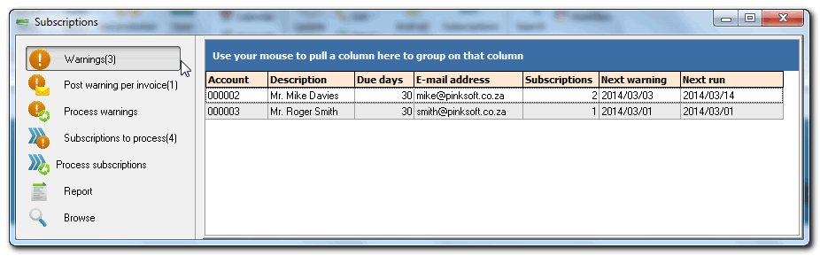
Filter / Search for Subscriptions
Click on the Browse button.
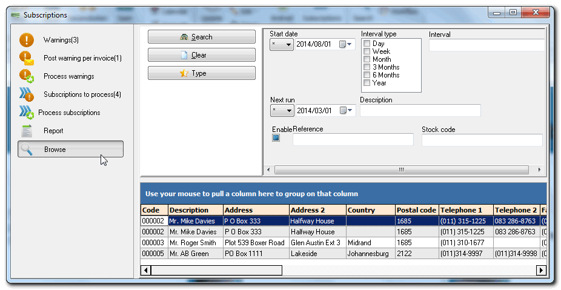
Click on the Search button. By default, no options should be selected, but you may select the criteria to filter or locate specific subscriptions.
Post warnings per invoice
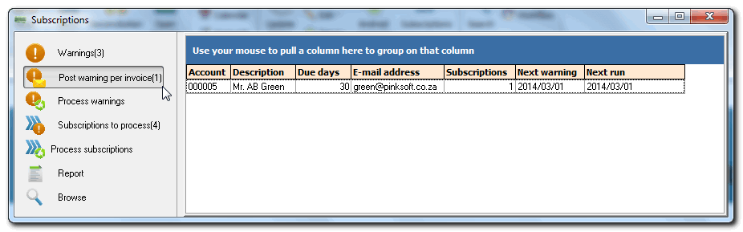
Process warnings
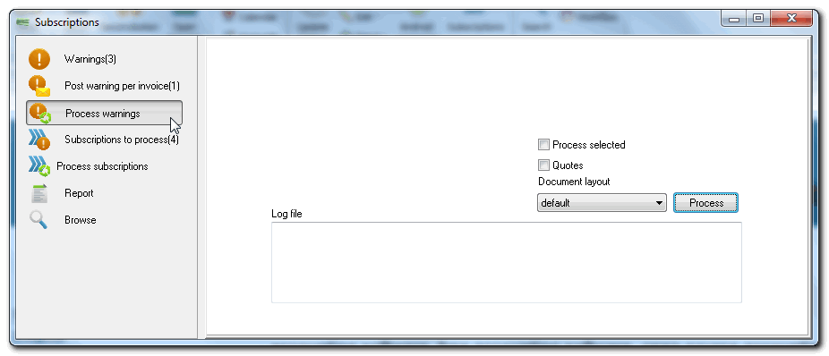
Process selected – Tick this option to process selected subscriptions. If this option is not selected, all subscriptions will be listed.
Document layout – The layout file is stored in the …\plug_ins\reports\Subscriptions\layouts folder.
Log file – The details of the debtor account(s) and subscription(s) will be displayed. An example, is as follows:
Processing accountD000-002 Mr. Mike Davies
Processing accountD000-003 Mr. Roger Smith
Processing warning for account D000-002 Mr. Mike Davies
Processing warning for account D000-003 Mr. Roger Smith
Processing warning for account D000-005 Mr. AB Green
Subscriptions to process
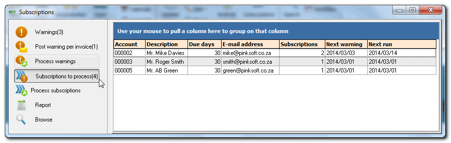
Process subscriptions
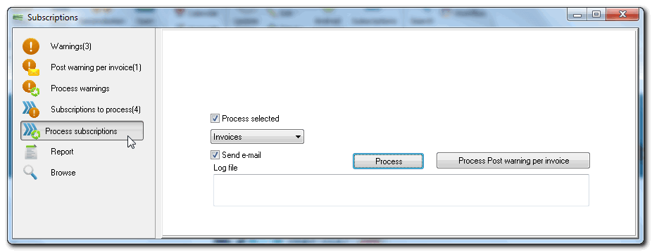
Process selected – Tick this option to process selected subscriptions. If this option is not selected, all subscriptions will be listed.
Invoices – Invoices is the default option. You may select to process Quotes or No document (already invoiced) options.
Send e-mail – If this option is not ticked, you may add print the documents manually. If this option is selected (ticked), the e-mail documents (invoices or quotes) will be attached as an attachment to the e-mail message to the respectable debtor accounts.
You may add or customize the email templates to be displayed in the e-mail message.
Process – This button will process the subscriptions.
Process Post warnings per invoice – This button will process and post the warnings per invoice.
Log file – The details of the debtor account(s) and subscription(s) will be displayed. An example, is as follows:
“Processing accountD000-005 Mr. AB Green
Adding subscription Subscription – Gym”
Subscription report

Click on the Report button.
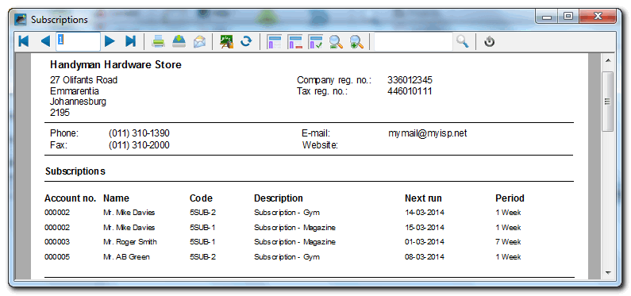
The report will list the subscriptions and the next run (dates for which subscriptions need to be processed).
This report is stored in the ...\plug_ins\reports\Subscriptions\reports folder.
Details and Processed subscriptions
You may click double-click on a subscription on the list in the Warnings, Post warning per invoice, Subscriptions to process and Browse screens, to edit a subscription or to view and print quotes and invoices for processed subscriptions.
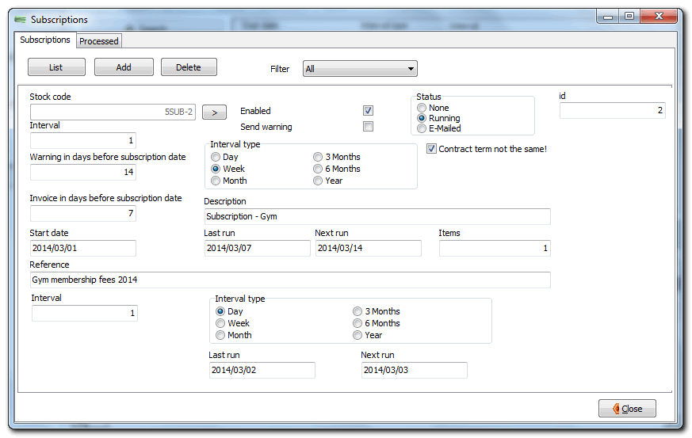
View processed subscriptions
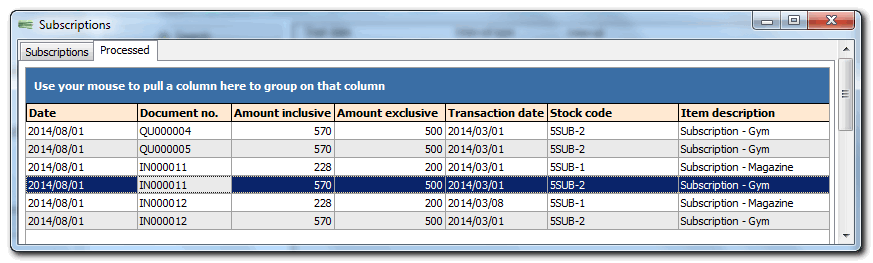
Print invoices or quotes
Double-click on a subscription. The document will be printed.

Process subscriptions
Process subscriptions - E-mail subscriptions
If you have selected the “Send e-mail” option on the Process subscriptions screen, the e-mail option will be launched.
The e-mail documents (invoices or quotes) will be attached as an attachment to the e-mail message to the respectable debtor accounts. If the “No document (already invoiced)” option is selected on the Process subscriptions screen, no document will be attached to the e-mail message.
You may add or customize the email templates to be displayed in the e-mail message.
Process Subscriptions - Configure E-mail
Process Subscriptions - E-mail account setup
Before you can send e-mails, you need to configure your e-mail account in the Set of Books. This is only a once off configuration. Unless your requirements change.
To do this, you need to click on the E-mail or E-mail selected button.
Then click on the Settings tab.
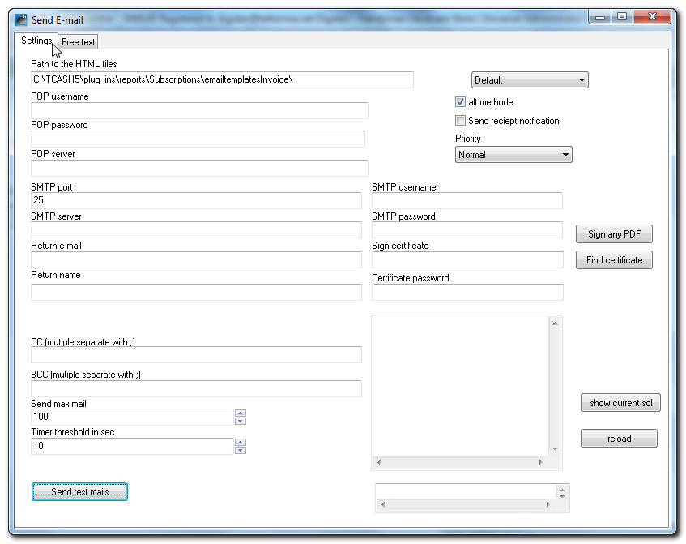
Select or enter the following, where applicable:
|
Field |
Description |
|
Path to the HTML file: |
The default path is displayed as “C:\TCASH5\plug_ins\reports\Subscriptions\emailtemplatesInvoice”. If you have installed TurboCASH into a different folder, you may need to overtype this. Specifies the path where the files for the Document email pro plugin is located. This path may be edited for your own requirements if you have a personal set of files. |
|
POP username: |
Enter the POP username as registered with your ISP (Internet Service Provider) for your e-mail account settings, if required. |
|
POP password: |
Enter the POP Password as registered with your ISP (Internet Service Provider) for your e-mail account settings, if required. |
|
POP server: |
Enter the POP server as registered with your ISP (Internet Service Provider) for your e-mail account settings, if required. |
|
SMTP port: |
The default is “25” seconds. This is determined by the default configuration of your operating system. |
|
SMTP server: |
Enter a valid SMTP as registered with your ISP (Internet Service Provider) for your e-mail account settings. Note when POP before SMTP (usually when you are not using your provider sent emails) you can create an e-mail box which nobody reads. This is because if there are multiple ISP's on the mail box mail is read, the POP for SMTP is not working properly. It is best to use an account that is further used by anyone. |
|
SMTP username: |
Enter the SMTP username as registered with your ISP (Internet Service Provider) for your e-mail account settings. |
|
SMTP password: |
Enter the SMTP password as registered with your ISP (Internet Service Provider) for your e-mail account settings. |
|
Return e-mail: |
This field is optional. You may enter your own e-mail address. |
|
Return name: |
This field is optional. You may enter your own name ro be displayed on the message to be displayed on the email field of the recipients e-mail or if the message is returned by your ISP in the case of an invalid e-mail address. |
|
CC: (multiple separate with ;) |
This abbreviation CC “Carbon Copy” indicates secondary recipients of a message. Those recipients who are to receive a copy of a message directed to another. The list of recipients in the CC field is visible to all other recipients of the message. Enter a valid e-mail address, if necessary. Note you need to add a space before and after the semi-colon. If you do not add spaces, the first digit of the second and subsequent e-mail addresses may cut off. This could result in an undelivered mail error. |
|
BCC: (multiple separate with ;) |
This abbreviation BCC “Blind Carbon Copy” allows you to send a copy of your correspondence to a third party when you do not want to let the recipient know that you are doing this (or when you do not want the recipient to know the third party's e-mail address). You may also wish to enter this filed, when sending an e-mail to multiple recipients, you can hide their e-mail addresses from each other. Enter a valid e-mail address, if necessary. Note you need to add a space before and after the semi-colon. If you do not add spaces, the first digit of the second and subsequent e-mail addresses may cut off. This could result in an undelivered mail error. |
|
Send max mail: |
The default is “100”. You may use the scroll buttons or enter the number of the maximum emails required to send in a batch. This will limit the number of email messages. |
|
Timer threshold in sec: |
The default is “10” seconds. This is determined by the default configuration of your operating system. It is not recommend ed to change this, but you could experiment by changing the values. |
|
Default: |
Default is the standard option. You may select the html only option. |
|
Alt methode: |
Tick to select the alternative mode. |
|
Send receipt notification: |
If this field is selected (ticked), a read receipt will be requested by the recipient. |
|
Priority: |
Normal is the default priority. You may select Highest, High, Low or Below low option. This is the priority in which e-mails will be sent. |
|
Sign any PDF: |
Optional should be you can sign any pdf with this button (also the ones send to you). |
|
Find certificate: |
If you have a certificate, click in this button to locate it and add it to this plugin. You may use add Digital signatures to the PDF (portable document format) files (e.g. OpenSSL pkcs12.pxf) to your e-mail received by your recipients (e.g. debtors (customers). See: |
|
Certificate password: |
If you have selected a certificate, you need to enter a valid password for that certificate. |
|
Send test mails button: |
You may send test e-mails to check that the configuration is correct. |
- The box (on the lower right-hand side) - Some messages, e.g. may be displayed in the text area of the Settings screen. An example may be “your e-mail address Login failed”. This may indicate that something is not correctly entered on the settings.
- Show current sql – The sql, is used to add the debtors, etc. for the Subscriptions plugin.
Process Subscriptions - Free text tab
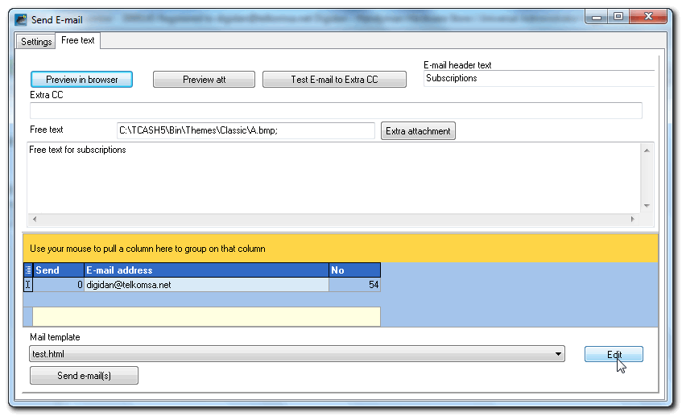
E-mail header text - Type the text to be displayed as the Subject field of your operating system's default e-mail program.
Free text – Enter additional text to be included in the e-mail message.
Preview in browser button – This will display the mail template in your system's default. This is the e-mail template which will be displayed as the e-mail message. You may create and customise e-mail templates and select a email template. The e-mail templates are stored in the (...\plug_ins\reports\Subscriptions\emailtemplatesInvoice).
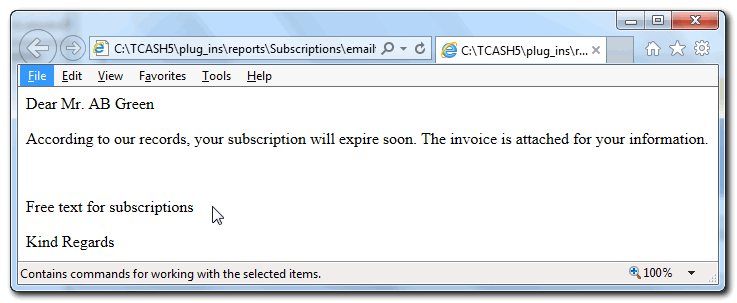
Preview att button – This will display the document layout file (invoice or quote).
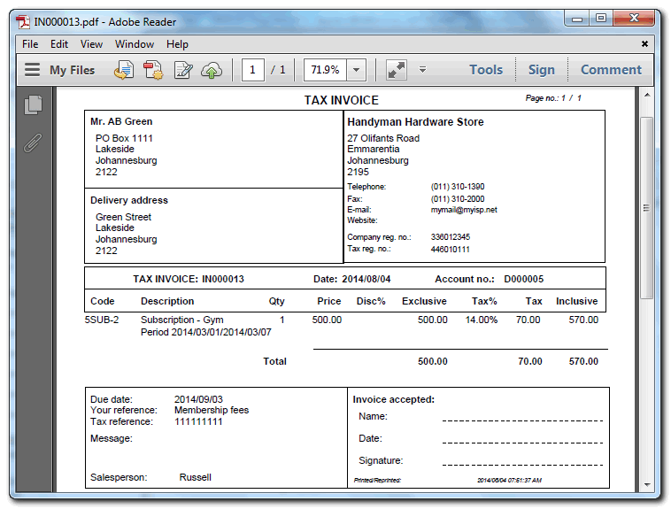
Test E-mail to extra CC – Test the mail to the extra e-mail address entered in the Extra CC field.
Extra attachment button – In addition to the document (invoice or quote), which will be automatically be attached to the e-mail, you may attach another file as an extra attachment.
Send e-mail(s) button – This will start to send e-mails and the attachments to the debtor accounts on the list.
Process Subscriptions - Customise E-mail templates
Preview in browser button – This will display the mail template in your system's default. This is the e-mail template which will be displayed as the e-mail message. You may create and customise e-mail templates and select a email template. The e-mail templates are stored in the (...\plug_ins\reports\Subscriptions\emailtemplatesInvoice).
If you click on the Edit button, the ...\plug_ins\reports\Subscriptions\emailtemplatesInvoice folder will be opened in Windows explorer or your system's default file browser.
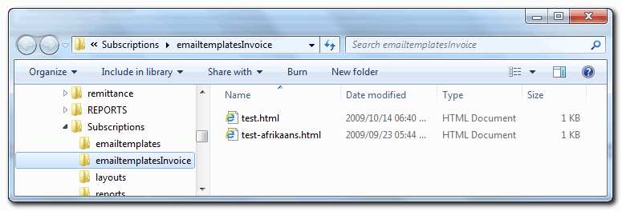
To create your own template it is easy and you may create as many templates, as required.
It is recommended that you copy the test.html file and rename it to your own needs.
The basic test.html template is as follows:
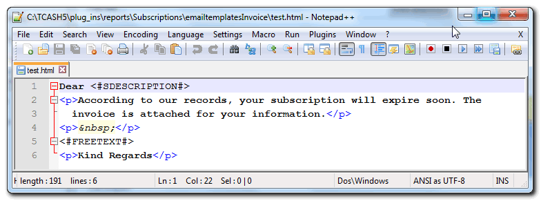
You may change all text as necessary. Please take note of the following two (2) fields:
<#SDESCRIPTION#> - This will add the name for the respective debtor accounts to the e-mail message.
<#FREETEXT#> - This will add the text as entered for the e-mail messages, as entered on the Free text field on the Free text tab.
You may preview the template when you click on the Preview in browser button on the Free text tab.
Process Subscriptions - Recipient's E-Mail Message
All debtor (customer / client) accounts (which have a valid e-mail address) will receive an e-mail message (based on the e-mail template and the free text) with the Invoice or quote as a Potable Document Format (pdf file) as an attachment. An example of the e-mail message received by the recipient(s), is as follows:
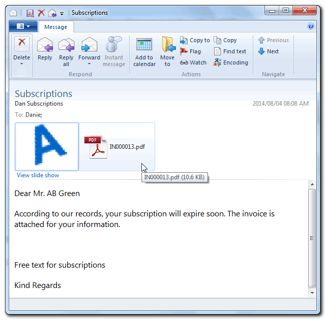
Process warnings
Process warnings - E-mail
Process Warnings - E-mail account setup
If the e-mail on the Settings tab for processing subscriptions was already configured, these details and settings is available to process warnings.
Note: The E-mail header text needs to be entered on the Settings tab when processing warnings. Type the text to be displayed as the Subject field of your operating system's default e-mail program.
Process Warnings - Send E-mail tab
If you click on the Process button on the Process warnings screen, the Send – E-mail screen will be launched. It will list all debtor accounts for which warnings need to be sent.
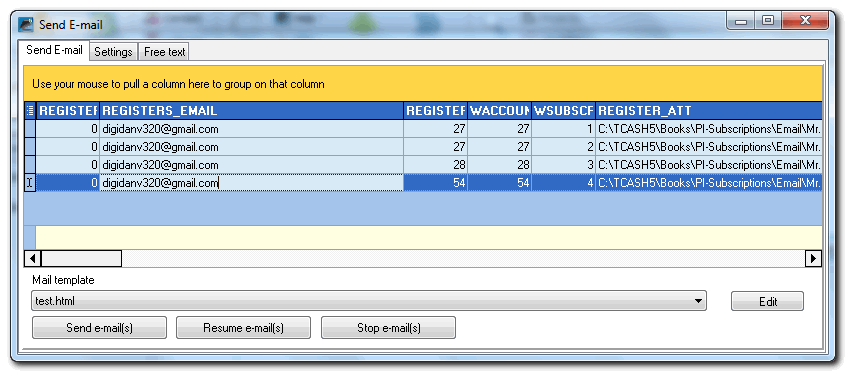
You may select an e-mail template to be used to display as the e-mail message.
Process warnings - Free text tab
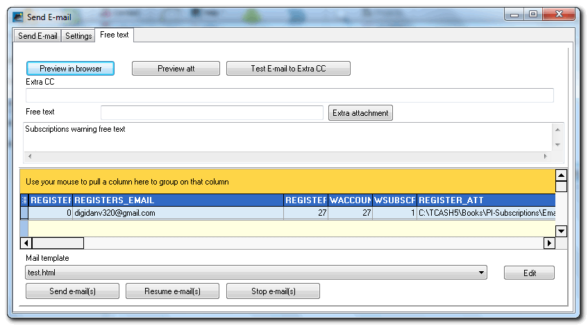
Free text – Enter additional text to be included in the e-mail message.
Preview in browser button – This will display the mail template in your system's default. This is the e-mail template which will be displayed as the e-mail message. You may create and customise e-mail templates and select a email template. The e-mail templates are stored in the (...\plug_ins\reports\Subscriptions\emailtemplates).
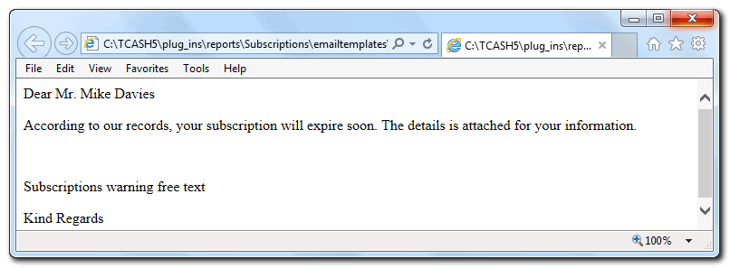
Preview att button – This will display the quote document layout file, if Quotes were selected on the Process warnings screen.
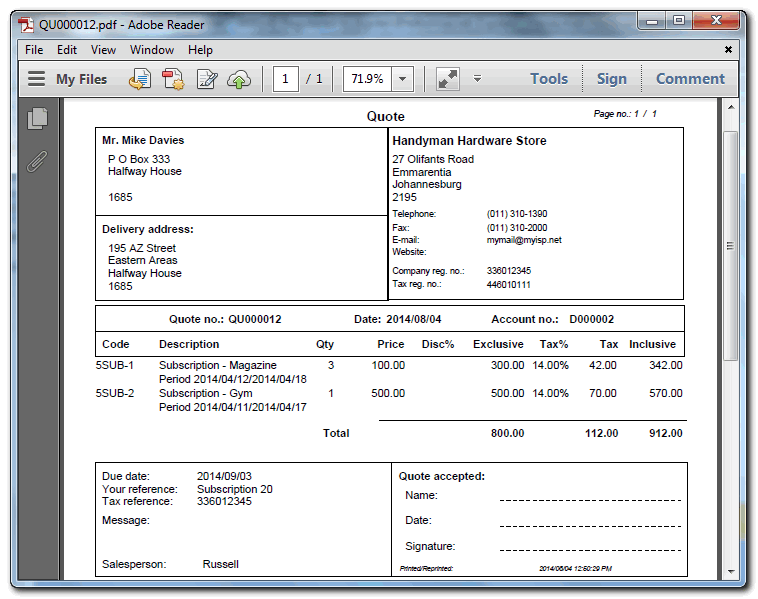
If Quotes were not selected on the Process warnings screen, it will display the warning report.
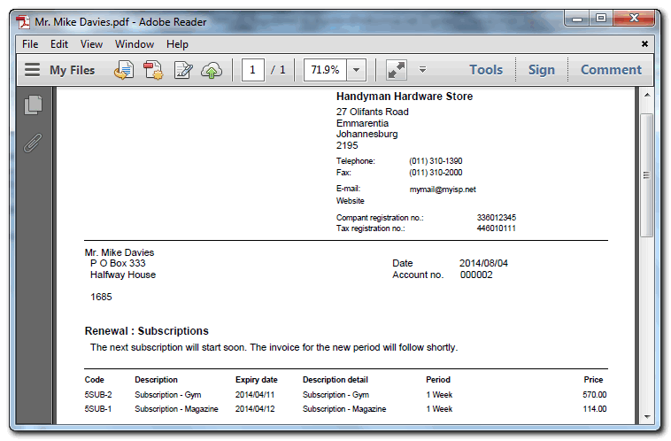
Test E-mail to extra CC – Test the mail to the extra e-mail address entered in the Extra CC field.
Extra attachment button – In addition to the document (invoice or quote), which will be automatically be attached to the e-mail, you may attach another file as an extra attachment.
Send e-mail(s) button – This will start to send e-mails and the attachments to the debtor accounts on the list.
Resume e-mail(s) button - If you have clicked on the Stop e-mail(s) button, this button will start sending the rest of the e-mails.
Stop e-mail(s) button – This will stop the e-mails from sending. You may click on the Resume e-mail(s) button to start sending the rest of the e-mails.
Process warnings - Customise E-mail templates
Preview in browser button – This will display the mail template in your system's default. This is the e-mail template which will be displayed as the e-mail message. You may create and customise e-mail templates and select a email template. The e-mail templates are stored in the (...\plug_ins\reports\Subscriptions\emailtemplates).
If you click on the Edit button, the ...\plug_ins\reports\Subscriptions\emailtemplates folder will be opened in Windows explorer or your system's default file browser.
To create your own template it is easy and you may create as many templates, as required.
It is recommended that you copy the test.html file and rename it to your own needs.
The basic test.html template is as follows:
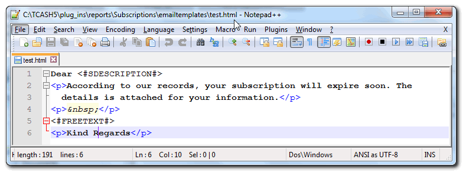
You may change all text as necessary. Please take note of the following two (2) fields:
<#SDESCRIPTION#> - This will add the name for the respective debtor accounts to the e-mail message.
<#FREETEXT#> - This will add the text as entered for the e-mail messages, as entered on the Free text field on the Free text tab.
You may preview the template when you click on the Preview in browser button on the Free text tab.
Process warnings - Recipient's E-Mail Message
All debtor (customer / client) accounts (which have a valid e-mail address) will receive an e-mail message (based on the e-mail template and the free text) with the Invoice or quote as a Potable Document Format (pdf file) as an attachment. An example of the e-mail message received by the recipient(s), is as follows:
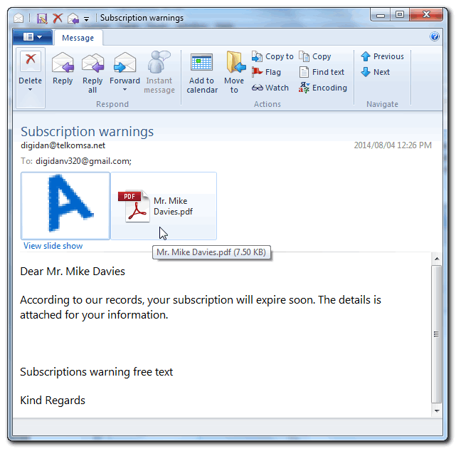
Process warnings – Customise Document layout file
If Quotes were not selected on the Process warnings screen, it will display the warning report (layout file). The default report is included and stored in the ...\plug_ins\reports\Subscriptions\layouts folder. You may copy and edit these layout files in the Report designer. You may access the Report designer from the Reports or Setup ribbons.
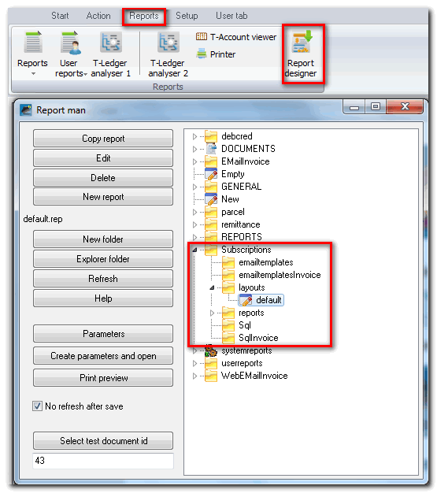
Select the Subscriptions – layouts folder. Click on the Copy report button to create an exact copy of the report.
Click twice on the Copy of default report to rename it according to your own requirements.
Select your copied report and click on the Edit button (You may also double-click on the report.
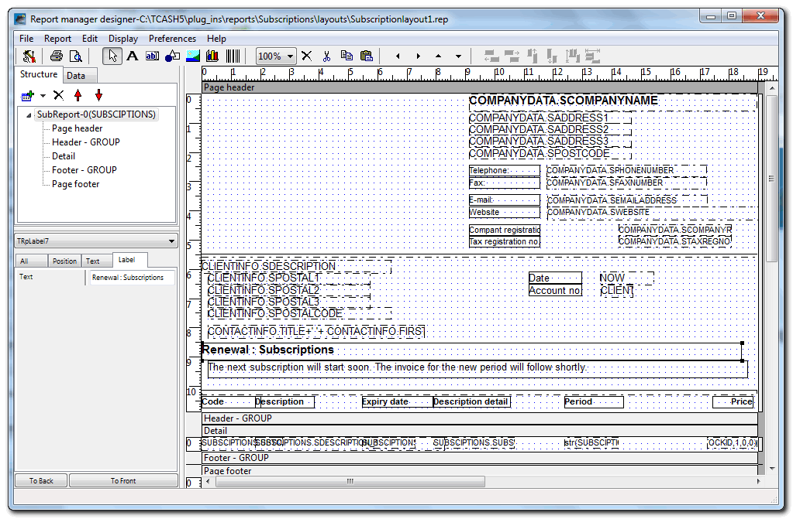
Change the text on the file:
Click on a text object (field) (red rectangles as per this example) and select the Label tab. Overtype the text as necessary.
Move text:
Drag it to the desired place.
Delete text or expressions:
Select the object and go to Edit - Delete
Add text:
- TRpLabel – Add static text object to the report. Examples on the above picture are, , Telephone:, Fax:, E-mail:, Website:, Company registration no.:, Tax registration no.: address, etc.
- Add the messages or text to display on the report.
Add company logo
- TRpImage – Click on this icon and click on the space and drag to insert a blank image object.
Enter “COMPANYDATA.BLOBLOGO” in the Expression field.
This is used to display your company logo on the reports and document layout files. The Company Logo dataset is COMPANYDATA.BLOBLOGO. The logo is stored in the database as a BLOB (Binary Large Object) and will be displayed printed on remittance layout files if loaded in Company info - Options screen (Default ribbon).
Add a static picture
- TRpImage – Click on this icon and click on the space and drag to insert a blank image object.
Right-click on the image object and select the Open option on the context menu.